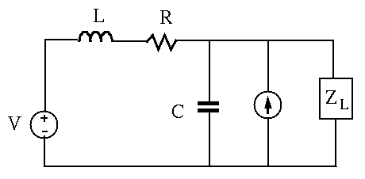
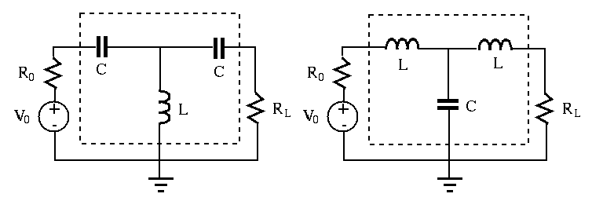
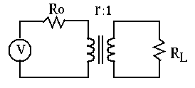

Maximize power delivery in AC systems
Previously we considered the maximization of the power received by a
resistive load . This problem can be generalized to AC circuit containing
 and
and  , as well as
, as well as  . Consider a voltage source composed of an ideal
voltage source
in series with an internal
impedance
, and a load impedance
. The load current
is:
. Consider a voltage source composed of an ideal
voltage source
in series with an internal
impedance
, and a load impedance
. The load current
is:
And we have:
The real power consumed by the load is:
The denominator is the squared magnitude of a complex variable
, which is minimized if the imaginary part
is zero, i.e., (while the real part is
always positive). Now  becomes:
This is the power delivered to the load resistance , which is maximized
if it matches the internal resistance of the source , as discussed
before. Combining these two requirements and , we conclude
that if
becomes:
This is the power delivered to the load resistance , which is maximized
if it matches the internal resistance of the source , as discussed
before. Combining these two requirements and , we conclude
that if
 , i.e., the load impedance is the
complex conjugate of the internal impedance , the load receives maximum
power:
, i.e., the load impedance is the
complex conjugate of the internal impedance , the load receives maximum
power:
Example:
Find load impedance so that it receives maximum power from the rest
of the circuit. Find this maximum power and load current .

Assume voltage source , current source
, and the
impedances of , , and are respectively
,
, and
. To solve this circuit, we can use
either Thevenin's voltage source or Norton's current source method.
- Find : turn off both voltage and current sources, find
and the internal (Thevenin or Norton) impedance:
where
,
.
- Find open-circuit voltage
across load port
by superposition principle. Due to voltage source alone:
Due to current source alone:
Now we have
- Find short-circuit current
 through load port
by superposition principle:
through load port
by superposition principle:
The relationship between the Norton current and Thevenin voltage can be
verified:
For the load to receive maximum power, it needs to be
The maximum power delivered to load is:
The current through the load is:
Geometric mean method
The load resistance will receive maximum power only if it matches the
internal resistance of the voltage source, . However, when
, the resistance match can still be achieved by inserting a
matching circuit between the source and load as shown in the figure.
The matching circuit is composed of two capacitors of the same
impedance and an inductor of impedance . Alternatively, the
two capacitors and the inductor in the matching circuit can be replaced by
two inductors and a capacitor. If the frequency of the voltage source is
 , then
, i.e.,
.
, then
, i.e.,
.

The total impedance of the new load composed of all four components ,
as well as is real (resistive):
Or, in the alternative case, the impedance of the new load is the same:
For this load impedance to match the internal resistance of the
source, we have
i.e., the reactance  is the geometric mean of the source and load resistances
and . Note that the matching circuit consumes no real power as it
does not have any resistance. We can verify that the power consumed by is
.
is the geometric mean of the source and load resistances
and . Note that the matching circuit consumes no real power as it
does not have any resistance. We can verify that the power consumed by is
.
This method can be generalized to any AC circuit composed of a voltage
source with an internal impedance
and load impedance
in the following two steps:
- First we replace the impedance of capacitor
 in series
with the load by , so that the additional reactance
cancels the load reactance , and the impedance in the load branch
is .
in series
with the load by , so that the additional reactance
cancels the load reactance , and the impedance in the load branch
is .
- Next we replace the impedance of capacitor
 in series
with the source by , so that the additional reactance
cancels the source reactance , and the impedance in the source
branch is .
in series
with the source by , so that the additional reactance
cancels the source reactance , and the impedance in the source
branch is .
- We can show that the impedance of the equivalent load composed
of , , and of the matching circuit and
of the load is indeed the complex conjugate of the
internal impedance
of the source:
i.e., now the load-source resistance match is achieved.
As this method requires a fixed reactance , it is valid for single
frequency
.
Example: An audio amplification circuit with an output voltage
and internal resistance
is used to drive a speaker with
 .
The power received by the speaker is:
.
The power received by the speaker is:
The power consumed by the internal resistance is:
The total power delivered is:
The speaker gets only
of the total power, while the
remaining
of the power is consumed internally.
To maximize the power delivered to the speaker, we add a matching circuit
composed of with impedance and with impedance
. When
, the resistance of the new
load
matches the internal resistance of the source,
and the speaker receives maximum power of
(half of
the total power
), 6.76 times the power without
the matching circuit.
As the frequency in the system is not constant, the matching is achieved
only at one particular frequency, typically chosen to be the middle of
the frequency range.
Matching resistances by a transformer
An ideal transformer can be used to match the load to the internal
resistance of the source. Recall the following relations for an ideal
transformer
where is the turn ratio. As and , we have
where we have defined
, which is related to the real load by
. For the load to receive maximum power , we need to
match the equivalent load resistance to match :

Example: In the previous example with
,
, a transformer with turn ratio of
can be used to match the load
to internal resistance .
Example:
,
, and the voltage
source is . Find the turn ratio of the transformer so that
the load resistor will get maximum power from the voltage source.
When the load resistor receives maximum power if its resistance
is equal to the internal resistance of the voltage source.
- Convert load resistance on the secondary side
to
on the primary side.
- Match
to , i.e.,
- Find turn ratio
.
- Find power consumption on :
- The power consumed by real load is the same, due to ideal
transformer.